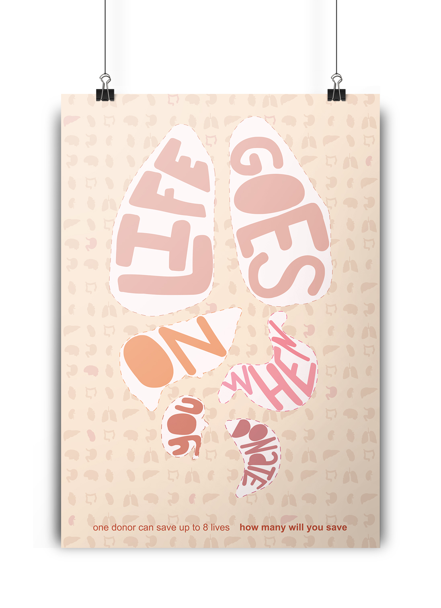
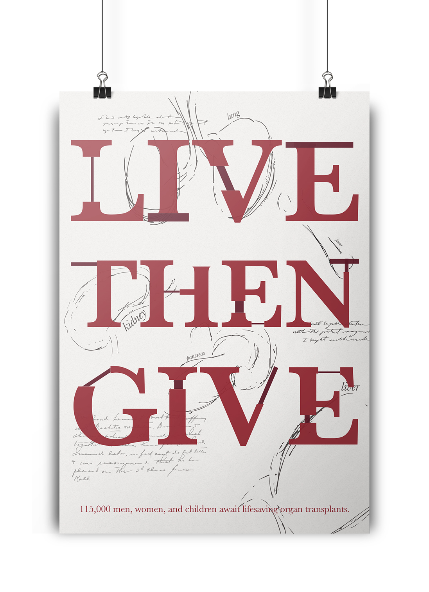

The first poster in the series conveys a lighter, more inviting typographic and color treatment. The light colors are used to draw the reader in. At first the poster reads as an image but with closer investigation, you can see a message within the organs.
The second poster in the series conveys a deeper and slightly darker treatment. The typography is pieced together to mimic the idea of organ donation. The background of the piece uses medical imagery and notes to further the message of the surgery but to also convey a more serious message to the viewer.
